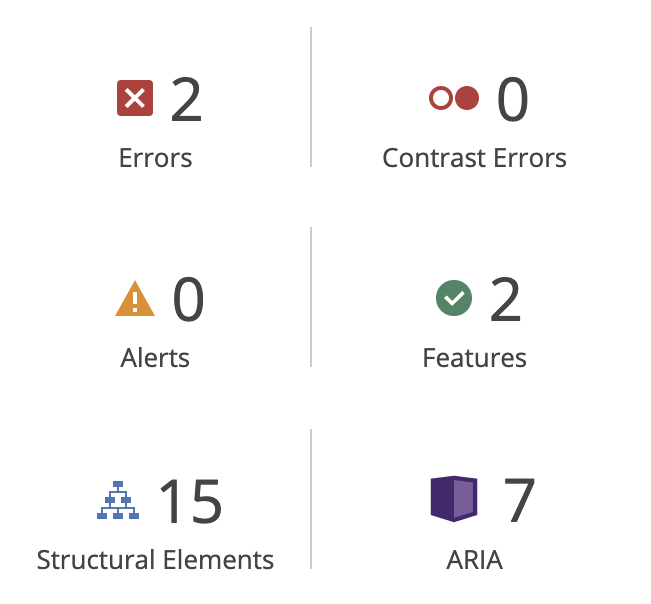
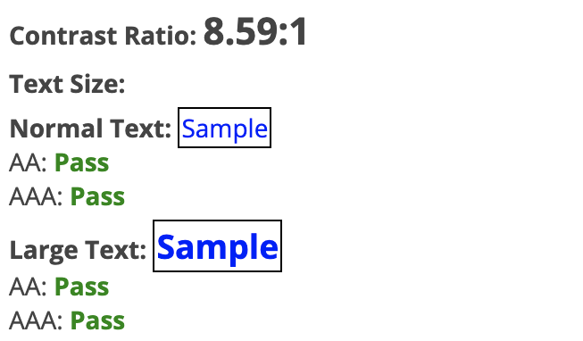

Vurderinger gjort underveis
Grunnlag for kodevalg
Automatisk test
Feil og features
Den automatiske testen gir kun to feil, som beror på at anker-elementene som inneholder logo og meny-burger ikke har noen tekst, men siden disse inneholder visuelle elementer ignorerer jeg disse feilvarslingene.
Testen oppgir også at siden inneholder språkdefinering og den lar skjermlesere ignorere ikoner som følger:
<!-- Definerer språket siden er skrevet i -->
<html lang="nb">
<!-- Gjør at skjermlesere ignorerer ikoner -->
<span aria-hidden="true">
Kontrastnivå
Ifølge w3schools som refererer til Apple, anbefales det en kontrastrate på minimum 4.5, helst 7. Dette nettstedet scorer 8.59.
Bilder
Alternativ tekst er også oppgitt på bilder som ikke er overskriftsbilder, men som er del av innholdet, og disse bildene er også hentet med html i stedet for css slik at de blir lastet selv om webklienten ikke laster styles.
Struktur
Siden er strukturert etter hovedelementene header, main og footer, deretter inndelt etter med nav, section og hierarkiske headers.
<html>
<header>
<nav>
<main>
<section>
<footer>

CSS
Hva gjelder CSS-en så er den bygget opp «mobile first», og deretter skaleres den opp med @media query. Koden bryter kun på ett punkt siden det aldri er mer enn to kolonner.
@media (min-width: 800px) {
}
Det er også bevisst valgt at noen av selectorene er relative og nested slik at om man ville byttet en seksjon fra lys til mørk så endres også fargene på <p>, <h#> og <a> også automatisk. Andre elementer som knapper og kode-blokker, som man muligens vil ha mer styring på selv er designet med mulighet for å selv velge når man vil bruke mørk og lys variant, eksempelvis:
/*Relativ selector*/
.section-light a {
color: #0C1821;
}
/*Manuelt fargevalg*/
.code-blue-light {
color: deepskyblue;
}
.code-blue-dark {
color: midnightblue;
}